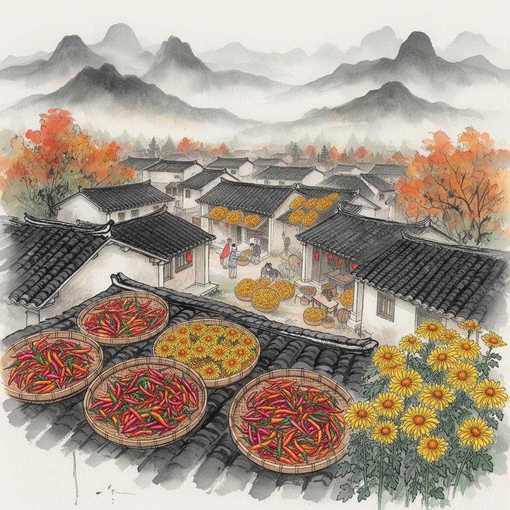

🔥 Most popularHuangling Ancient Village
The ancient village, perched on a mountain cliff, is renowned for its unique "autumn drying" agricultural custom. Hundreds of Hui-style ancient houses are arranged in layers along the mountainside. Every autumn, villagers dry their harvested peppers, chrysanthemums, pumpkins, and other produce on drying trays on their rooftops, creating a colorful harvest scene.
Autumn drying spectacle
Tianjie Ancient Alley
Terraced fields and sea of flowers
Ancient and famous trees
💡 Travel Tips:
Autumn (September-November) is the best time to view the autumn
harvest. It is recommended to arrive early in the morning to avoid
crowds and enjoy the best panoramic view of the autumn harvest
from a high vantage point.